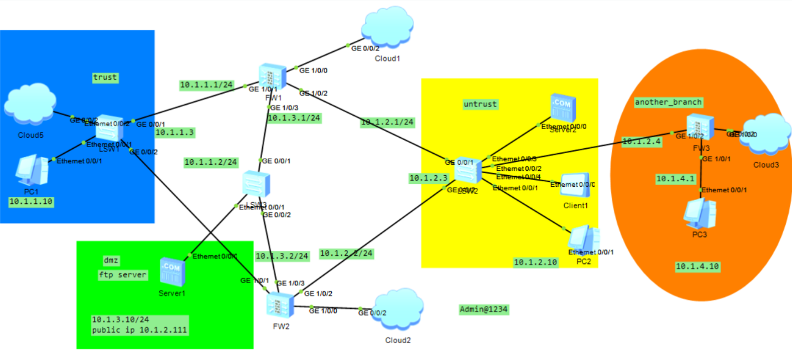
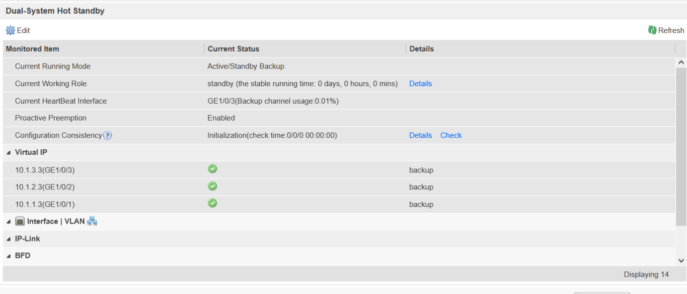
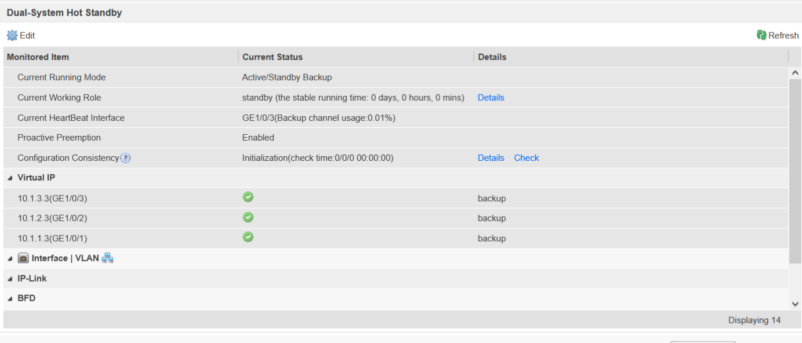
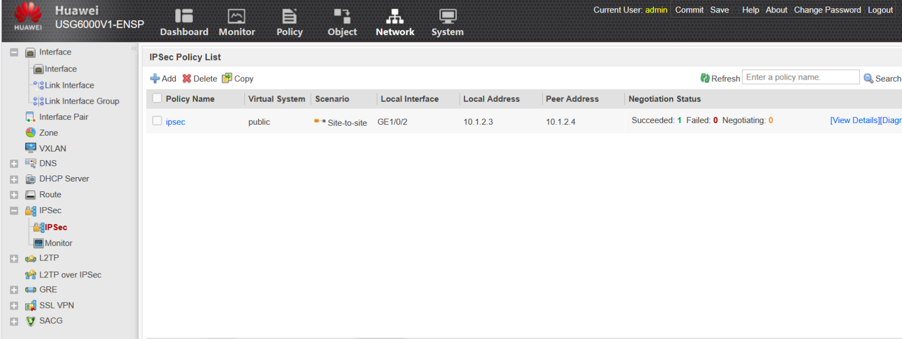
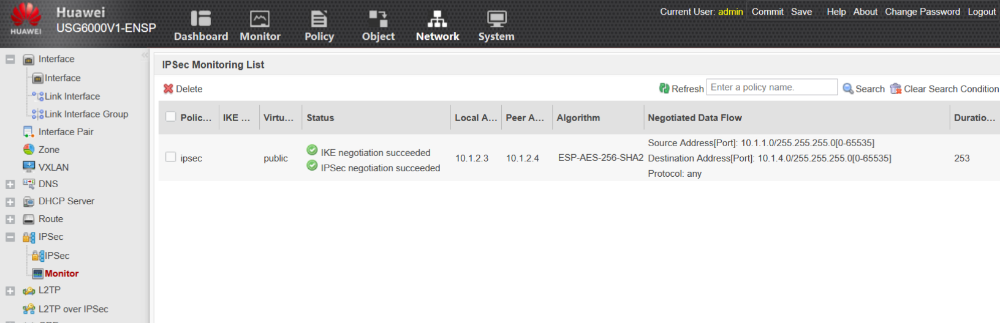
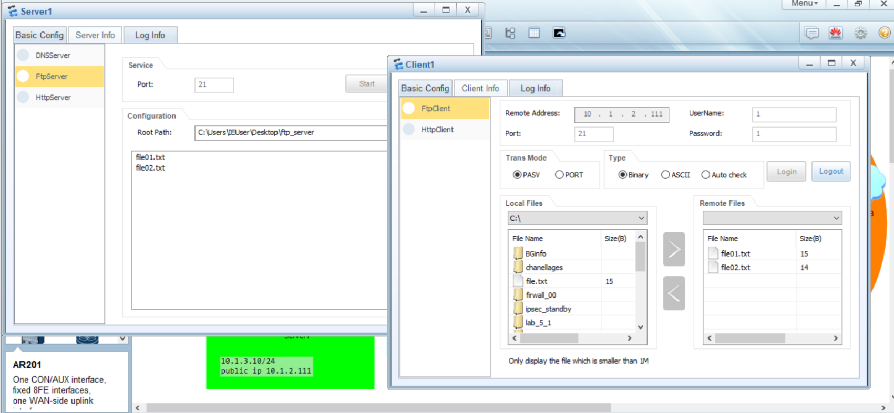
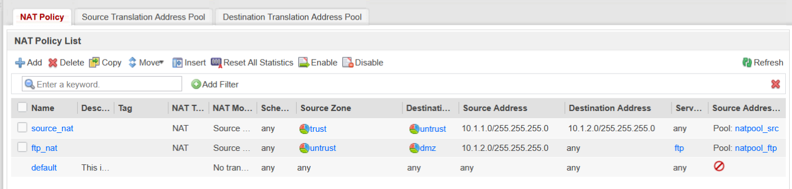
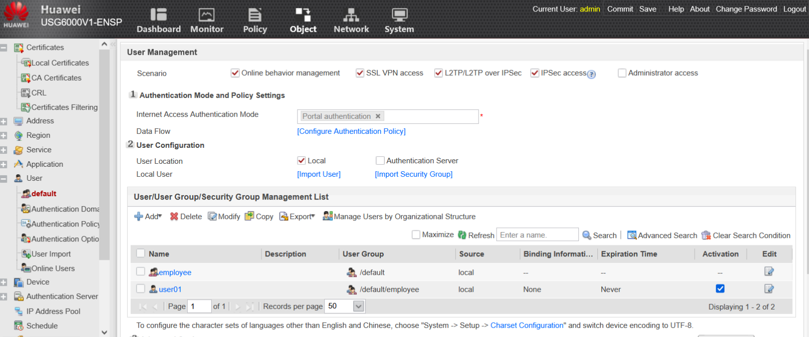
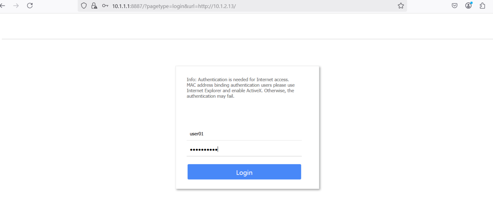
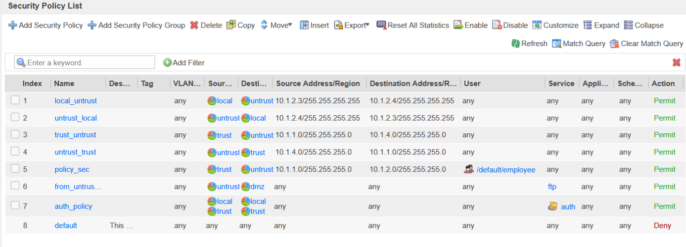

Huawei Firewall Network Security Project (ENSP)
This project implements a secure enterprise network using Huawei firewalls on ENSP (Enterprise Network Simulation Platform). The goal was to design a robust security architecture with high availability, VPN connectivity, NAT, user authentication, and access control policies.
Project Objectives
- High Availability (Hot Standby) – Configure active/standby firewalls for failover.
- Zone-Based Security – Define Trust, DMZ, and Untrust zones with controlled access.
- IPSec VPN (Site-to-Site) – Securely connect the main office (Trust) and a remote branch.
- NAT (Network Address Translation)
- Source NAT: Allow internal users (Trust) to access the internet (Untrust).
- NAT Server: Permit external users (Untrust) to access the FTP server in DMZ.
- User Authentication – Restrict web access to authenticated employees.
- Security Policies – Enforce strict traffic filtering between zones.
Network Topology
The network consists of:
1. Trust Zone (Internal Network)
- Contains employee workstations (
10.1.1.0/24).
- Connected to FW1 (Active) and FW2 (Standby).
2. DMZ Zone (Servers)
- Hosts an FTP server with a public IP for external access.
- Only FTP traffic is allowed from the Untrust zone.
3. Untrust Zone (Internet)
- Simulates the public internet.
- External users can access the DMZ FTP server but nothing else.
4. Another Branch (Remote Site)
- Connected via IPSec VPN (
10.1.4.0/24).
- Uses FW3 as its firewall.
5. Cloud Devices (Management & Testing)
- Cloud1-3: Used for web-based firewall configuration.
- Cloud5: Acts as a Trust Zone device for testing.
📌 Topology Diagram:

Implementation Details
1. High Availability (Hot Standby - VRRP)
- FW1 is the active firewall.
- FW2 is the standby (takes over if FW1 fails).
- VRRP ensures automatic failover.
 

2. IPSec VPN (Site-to-Site)
- Connects
10.1.1.0/24 ↔ 10.1.4.0/24.
- Uses IKE & ESP for encryption.
- Static routes ensure VPN traffic flows correctly.



3. NAT (Network Address Translation)
A. Source NAT (Trust → Untrust)
- Allows internal users (
10.1.1.0/24) to access the internet.
- Translates private IPs to a public IP pool.
B. NAT Server (Untrust → DMZ)
- Maps a public IP to the DMZ FTP server.
- Only FTP traffic is permitted.


4. User Management (Web Authentication)
- Employees must authenticate before accessing external HTTP services.
- A user group ("employee") was created.
- User01 was added for testing.




5. Security Policies (Traffic Filtering)
| Policy |
Source Zone |
Destination Zone |
Service |
Action |
Purpose |
| 1-4 | Trust | Branch (VPN) | IPSec | Allow | VPN Traffic |
| 5 | Trust | Untrust | HTTP | Allow (Auth) | Employee Web Access |
| 6 | Untrust | DMZ | FTP | Allow | External FTP Access |
| 7 | Any | Firewall | Auth | Allow | User Authentication |

Conclusion
This project successfully implemented:
- ✅ High Availability (Active/Standby Firewalls)
- ✅ Secure VPN Connectivity (IPSec)
- ✅ Controlled NAT (Internal & External Access)
- ✅ User Authentication (Web Access Control)
- ✅ Strict Security Policies (Zone-Based Filtering)
The firewall ensures secure, reliable, and monitored network access while preventing unauthorized traffic.
📂 All configurations and screenshots are available in the ./Screenshots/ directory.